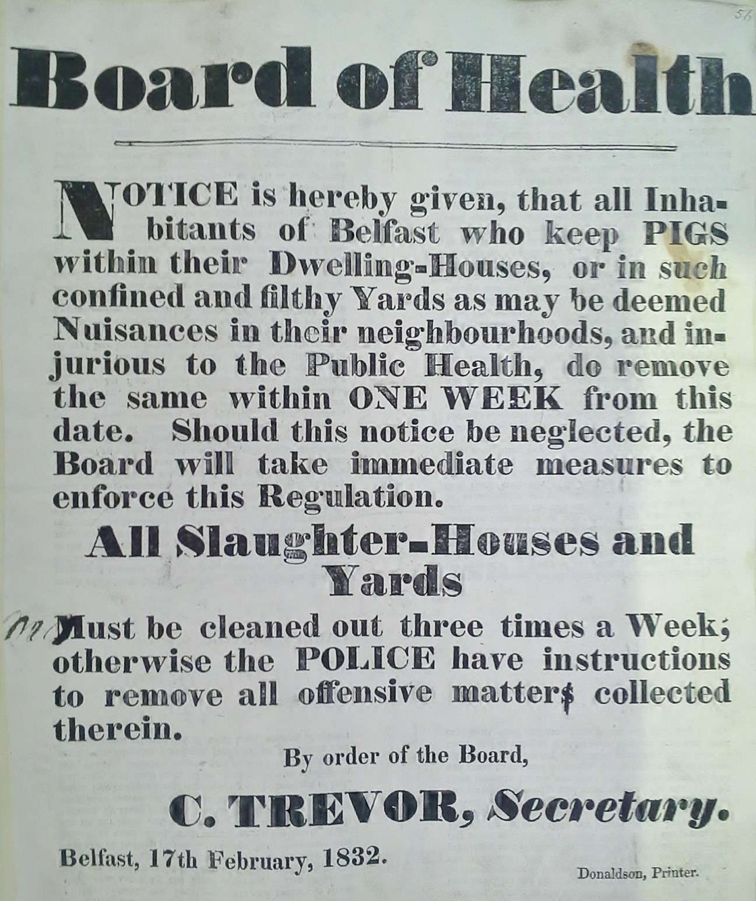

A Brief Overview of Public Health and Epidemic Disease, 1800–1878

On a summer day in 1865, many of Belfast's reservoirs stood almost empty. Across working-class districts, families queued at public fountains for a few hours' supply of foul water drawn from the polluted River Lagan. Within a year cholera would return. The crisis exposed a problem that had haunted Belfast throughout the nineteenth century: the city's astonishing industrial growth had far outpaced its public health capabilities.
Early civic Belfast was shaped by landlord planning; however, its town council (Corporation) was a largely ineffectual body. By 1835, the commissioners investigating Ireland's municipal corporations concluded that Belfast's Corporation had failed its inhabitants entirely, observing that 'great neglect and abuse of trusts in the body have occurred and have remained so long concealed that the utmost difficulties now lie in the way of any attempt to correct them.'1
Still, Belfast's nineteenth century transformation was dramatic. As Ireland's only major industrial centre, it attracted waves of rural migrants to its cotton and linen mills, shipyards, and busy port. The population surged from around 37,000 in 1821 to over 208,000 by 1881, placing immense strain on every aspect of its urban infrastructure.2
The rivers that powered the town's industrial growth, the Farset, the Blackstaff, with its tributary the Pound Burn, the Milewater, and Connswater, were often transformed into little more than open sewers. Choked with industrial waste, household refuse, and sewage, they caused significant concern to public health reformers who viewed them as major conduits for disease. Yet their pollution was only one facet of the town's broader public health crisis. In overcrowded courts, lanes, and alleys tucked behind the principal thoroughfares, substandard housing, inadequate drainage, rudimentary sanitation, and poor access to clean water were equally conducive to the spread of disease. The early corporation offered only piecemeal responses to these conditions, while sustained reform was more often driven by epidemic crisis, particularly outbreaks of fever and cholera.
From the early 1800s, the Belfast Corporation introduced occasional by-laws against public nuisances, but it lacked any robust system for sanitation, clean water supply, or housing regulation. The 1800 Belfast Police Act created a two tier structure, the Committee and Commissioners of Police, to handle street cleaning and remove nuisances. However, overlapping responsibilities and limited function meant that they were often unable to keep Belfast sufficiently clean. Charitable efforts tried to fill some of the gaps. The Belfast Charitable Society's Poor House, which opened in 1774, and the Dispensary and Fever Hospital, operating from the 1790s, offered basic care for the sick poor. Yet these institutions were soon overwhelmed by the rapid industrial and population growth.
The Belfast Charitable Society's Poor House, which opened in 1774, and the Dispensary and Fever Hospital, operating from the 1790s, offered basic care for the sick poor.3 These institutions, however, were soon overwhelmed by the rapid growth of the town's cotton and linen industries and the sharp rise in population. The Society's influence however, extended well beyond poor relief. From the 1790s, it assumed responsibility for Belfast's water supply and opened the New Burying Ground in 1797. In 1817, the Spring Water Commissioners were created, remaining subject to the Society's direction, until the Belfast Water Commissioners took over in 1840.4
Belfast's expansion was also reliant on its rivers; however, they also contributed to the town's sanitary issues. By the 1820s, for example, the Blackstaff River and its tributary the Pound Burn had become notorious health hazards. In 1852, with the issue still unresolved, Andrew Malcolm described the river as a 'foul and open tortuous stream', which served as an open sewer for domestic, industrial and institutional refuse. A similar pattern of municipal neglect was also evident in the town's housing. Before the 1845 Belfast Improvement Act, working-class housing was constructed without meaningful regulation. Families crowded into single-room dwellings in confined courts and alleys, often without running water. Sanitary facilities were mostly rudimentary, some dwellings had no privy at all, while others relied on a single shared privy for an entire street, with domestic, and other waste, dumped onto communal middens. Combined with the town's rapid population growth, these conditions, often created perfect breeding grounds for epidemic disease.5
When cholera threatened in 1831, Belfast's authorities demonstrated notable foresight. As the first Irish town affected, they acted ahead of instructions from Dublin and formed a Board of Health, which, among other measures, divided the town into medical districts and issued public notices urging hygiene and cleanliness. By the end of the epidemic, Belfast had recorded a mortality rate of just under 15 per cent, significantly lower than other comparably sized towns and cities in Britain and Ireland. This outcome was widely attributed to the early actions of the Board of Health, its cooperation with the town's main sanitary bodies, and the management of the cholera hospital under Dr Henry McCormac.
The 1838 Irish Poor Law introduced workhouses as part of state-administered poor relief, but Belfast's Board of Guardians increasingly assumed responsibilities that extended into emergency medical care and basic sanitary management, particularly during periods of epidemic crisis. Acting with a degree of autonomy, the Board opened its Union Workhouse in 1841 with ten dedicated beds for the sick, extending its function beyond poor relief and challenging central policy.
The scale of crisis intensified during the period of the Great Famine. Although Belfast was spared many of the worst aspects, fever, diarrhoea, and dysentery swept through the town, claiming at least 2,267 lives in 1847 alone.6 Hospitals were overwhelmed leading to requests for the erection of temporary facilities. By late July, the Belfast Newsletter reported that 'every new building erected for patients is filled to overflowing as soon as it is completed.'7 Burial space was also at a premium as bodies arrived faster than gravediggers could accommodate them.
All of this placed mounting pressure on the town authorities and the Poor Law system, and as Belfast's guardians continued to refuse to provide soup kitchens or outdoor relief, philanthropic assistance became vital. As early as October 1845, the Belfast Society for the Amelioration of the Condition of the Poor, initiated by the industrialist Andrew Mulholland and driven by the reforming ideals of Andrew Malcolm, sought to establish a public bath and washhouse. The facility, the first of its kind in Ireland, opened in May 1847; during its first nine days, 1,328 people took baths and 222 washed clothes.
Additional forms of private philanthropy, including organisations such as the Belfast General Relief Fund and private soup kitchens, facilitated the distribution of soup and bread to up to 15,000 people within a few weeks of their establishment.8 Other organisations, particularly those run by women also played a significant role, providing clothing and encouraging women to undertake paid work as a form of self-help and economic improvement.9 Evangelisation was closely linked to many philanthropic associations. Some Protestant leaders viewed the famine as a divine judgement and an opportunity for conversion, a dynamic that ultimately contributed to the deepening of sectarian division in Belfast.10
This crisis helped trigger more organised civic intervention. In March 1848, Andrew Malcolm's scathing report at a town meeting led to the formation of the Belfast Sanitary Committee. The committee introduced house-to-house visitation, appointed Officers of Health, as well as health visitors, revived contagion control measures and campaigned for the introduction of an Irish Public Health Act. Its initial success was such that several other towns were inspired to establish similar bodies. Yet cholera's return in 1848–49 demonstrated how fragile these improvements remained. By the end of the epidemic cholera mortality had risen to 33 per cent, as the epidemic struck a population already affected by poverty, hunger, and disease. Wider public health deficiencies also persisted, meaning vulnerability to infection was not confined to famine-related distress alone.
Reflecting on these recurring crises in 1852, Andrew Malcolm warned that sanitary reform was too often driven by epidemic emergencies rather than sustained intervention. Writing as cholera once again threatened Britain and Ireland, he observed that many sanitary associations had ceased operations following the previous outbreak, creating a false sense of security. He criticised the 'sudden burst of enthusiastic exertions' that had accompanied cholera outbreaks, arguing that they did little to 'materially alter our sanitary position.'11 His comments reflected a wider frustration that, despite periodic campaigns and temporary improvements, many of Belfast's underlying sanitary problems remained unresolved.
Alongside official reports, contemporary observers recorded the lived reality of these conditions. Rev. William O'Hanlon's Walks Among the Poor of Belfast (1853) described back lanes containing 'an amount of wretchedness... more appalling, than may probably be found beside, throughout the length and breadth of the land,' while Rev. Anthony McIntyre's diary reveals an equally bleak picture of the extent of deprivation endured by the labouring population who occupied the town's back streets.12
These recurring crises exposed the limitations of Belfast's sanitary framework and increasingly prompted legislative and administrative intervention. The Medical Charities Act of 1851 reorganised Ireland's dispensary system, bringing it more closely under Poor Law administration and extending the powers of local authorities in public health and sanitation. It widened access to treatment for the sick poor, both at dispensaries and in patients' homes where necessary, and strengthened the system's overall administrative structure for managing medical relief. While the enforcement of the Act's sanitary powers varied widely across the country, it nevertheless marked an important step towards a more coordinated system of publicly administered healthcare in Ireland.
In 1852, Andrew Malcolm's landmark report to the British Association for the Advancement of Science, The Sanitary State of Belfast and Suggestions for its Improvement, provided a detailed socio-medical analysis of the town. Drawing on a range of public health evidence, he highlighted severe overcrowding in working-class districts alongside deficient ventilation, sanitation, drainage, cleansing, water supplies, and polluted waterways such as the Blackstaff River, linking these conditions directly to high levels of disease, among them cholera and fever, the latter of which he regarded as being endemic. Malcolm also criticised the tendency for sanitary reform to be driven by epidemic crisis rather than sustained intervention, arguing that effective public health action required continuity if the underlying causes of urban disease were to be addressed.
However, mid-century political infighting repeatedly undermined calls for sanitary reform, most notably through the 1855 Chancery Suit. Brought by Liberal solicitor John Rea, the suit accused the Belfast Corporation of corruption and mismanagement, effectively paralysing civic reform for a decade. Former Medical Officer Samuel Browne later observed that the case had 'pushed everything else aside and arrested sanitary progress.' When the suit was finally resolved, building resumed quickly, but this did little to silence criticism of Belfast's sanitary condition. In 1865, The Dublin Builder condemned neglect of the town's most 'disgraceful and gigantic nuisances,' particularly water supply, street paving, and sewer provision.13
The vulnerability of Belfast's water supply became particularly clear during the summer of 1865, when an acute shortage hit the town. In early August, Poor Law Guardian Samuel Tierney condemned the Water Commissioners' inefficiency, calling the water sent to homes "green filth." The Belfast Newsletter labelled the crisis a "water famine," reporting empty reservoirs and water unfit for consumption. The blame, it insisted, lay with the Commissioners, stating that public health was endangered and sanitary precautions rendered impossible. By September, with no solution in sight, fever had become epidemic, and cholera again threatened Belfast.
When cholera returned in 1866, Belfast experienced a remarkably light impact. Official records recorded only 28 cases and 15 deaths (53.5% mortality).14 However, in 1868, Samuel Browne in a paper published by the National Association for the Promotion of Social Science, recorded that there had been 73 cases and 33 deaths (45.2% mortality).15 Even so, the relatively limited impact of the outbreak arguably owed less to sanitary progress than to cholera's often unpredictable behaviour. While the town's Sanitary Committee operated more effectively than during previous outbreaks, the Blackstaff nuisance and broader public health problems continued to persist, even as Belfast became incorporated in a progressively restructured system of public health administration in the later nineteenth century.
In 1878, The Public Health (Ireland) Act represented the culmination of decades of gradual reform, consolidating earlier legislation into a more comprehensive framework for sanitary intervention. In Belfast, the corporation's powers over nuisance removal, drainage, sewerage, housing conditions, water supply, and the control of infectious disease were further strengthened, while some of the Act's practical impact could also be seen in urban redevelopment schemes. Among the most visual examples was the Hercules Street clearance scheme, which replaced a notoriously overcrowded and unsanitary area with the new commercial thoroughfare, Royal Avenue. A corporation run public washhouse at Peter's Hill also opened, bringing a previously philanthropic initiative into the sphere of municipal public health provision. Three more were added before the end of the century.16 However, despite these developments, longstanding infrastructural problems continued to shape everyday sanitary conditions well into the next century.
Public health reform in Belfast was never a straightforward story of progress. Each advance emerged from crisis, cholera outbreaks, fever epidemics, water shortages, and mounting public pressure. Reformers such as Henry McCormac, Andrew Malcolm, Samuel Browne, and voices like William O'Hanlon and Anthony McIntyre repeatedly exposed conditions that many preferred not to see. By 1878 however, Belfast possessed a far stronger sanitary framework than it had in 1832, yet many of the town's underlying problems remained unresolved, and the public health challenges facing Belfast extended well beyond the nineteenth century. Indeed, one of the town's most persistent sanitary weaknesses, its water supply, was not substantially addressed until 1901, when Luke Livingston Macassey completed the first stage of the Mourne Mountains scheme, transforming the provision of water to the growing city.